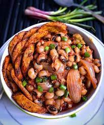
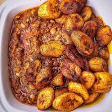

Quite simply one of the most popular food pairing/combo in
the entire Nigerian
cuisine pantry. Beans and plantain offer a really
nutritionally balanced and great tasting dish.


Ingredients:
- 1 derica of beans
- Grated pepper (a bit)
- Salt
- Onion
- Palm oil
- 1 tsp sugar(optional)
- Peeled ripe plantain
- Vegetable oil for frying
How to prepare:
- Pick out dirt from your beans,wash it three times nd pour in a pot of enough water
- Allow it boil for 10 min,
sieve the beans away from the dirty water nd replace it with another clean
water to cook
- Cover it till halfdoneAdd sliced onion,put as much as possible,it has no effect
- Cover it till soft
- Add palmoil,"1tsp of sugar(optional)"" and grated pepper
- Cover till done
- Dodo:sliced your plantain to the shape of your choice
- place your pan of vegetable oil on gas allow it heat
- Then arrange ur sliced plantain on it
- allow it fry till golden brown
- Your beans and dodo is ready